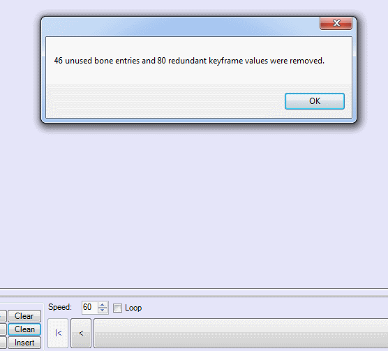

"Brawlbox throws an error when I append an animation"
Solution: Preview your desired animation in brawbox and click "clean". A dialog should pop up like the one in the picture below. Then click "save" in the upper left hand corner of the previewer. Finally re-export that animation. You should be able to concatenate the animations without issue if you start over by replacing "NewCHR" with your first animation.

"The BRRES viewer doesn't display its main window."
Solution: Close the window that does appear, delete brresviewerv4.ini, and reopen the brres viewer.
"My model looks like a contorted mess of polygons in 3DS max after importing the psk file."
Solution: your model is incompatable with this technique, please use a different model.
"I cannot select the unit using my model in game."
Solution: You forgot to merge "hitboxes.max" and/or deleted the hitboxes by mistake Repeat the steps here starting from "Creating hitboxes".
Return to Index